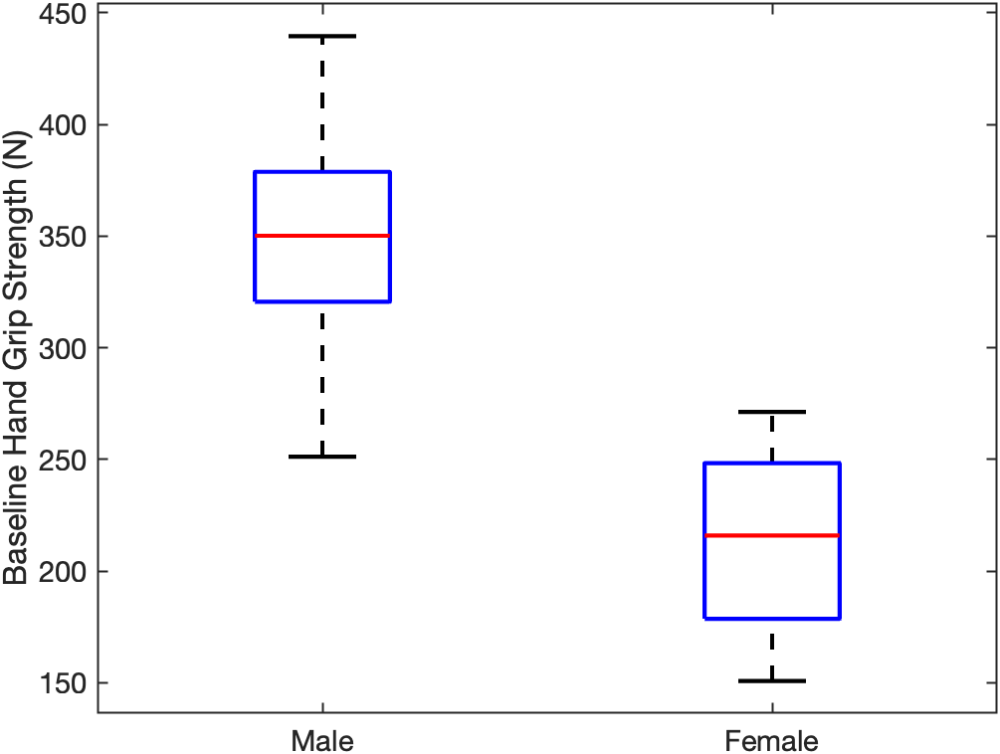
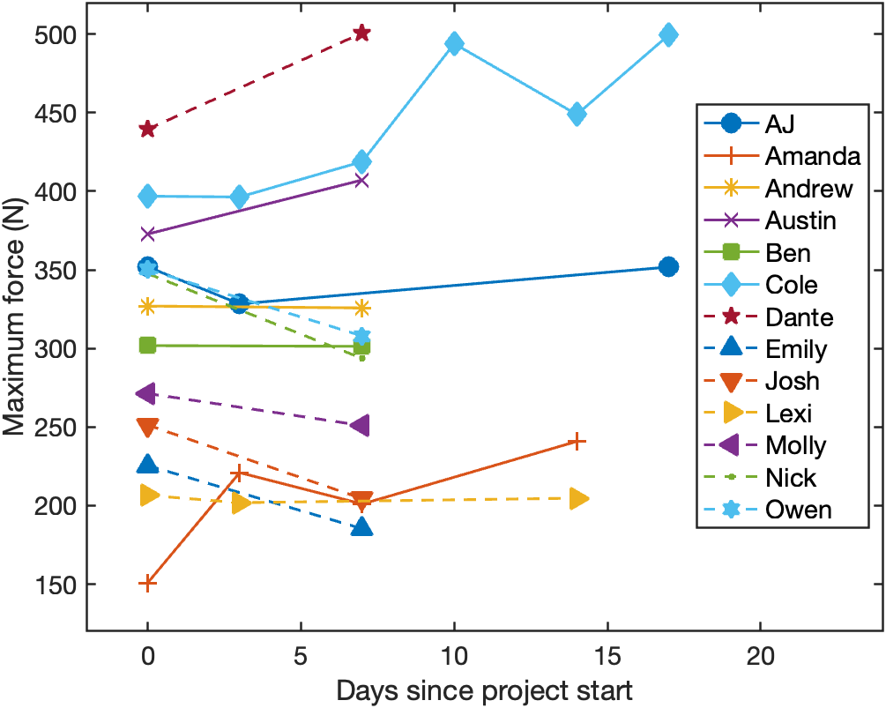
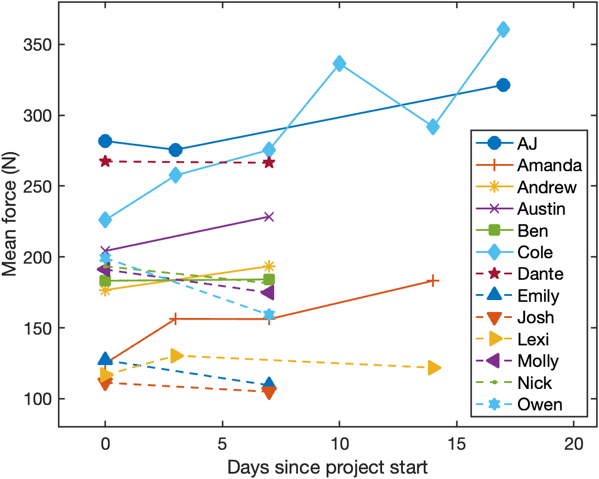
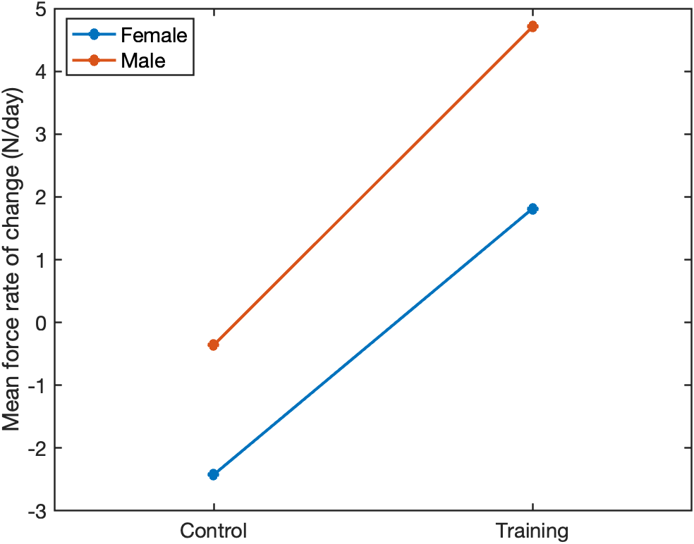
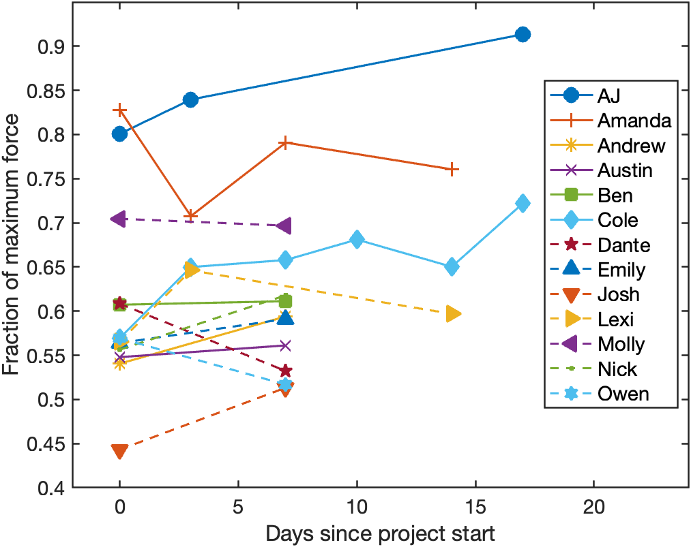

Engineering case study
Grip Strength Training Study
Can one minute of daily isometric training change grip strength in two weeks?

The Experiment
We investigated short-term grip training with four training participants and nine controls. Training participants performed a one-minute isometric squeeze each day. During data collection, participants completed a 60-second maximum-effort trial with a Vernier hand dynamometer connected to a LabQuest Mini and Logger Pro.
My Role
I created the test protocol and served as the lead for subject testing. The protocol standardized the seated position, approximately 90-degree elbow angle, supported forearm, and 60-second maximum-effort grip trial. I led the participant testing and collection of force-time measurements using the Vernier dynamometer, LabQuest Mini, and Logger Pro.
I modeled the results in MATLAB, working with the force-time data to characterize peak grip force, sustained mean force, and normalized endurance. The analysis estimated each participant’s rate of change across testing sessions and compared the training and control groups.
I also contributed to the technical writing: I wrote the conclusion, assisted with the introduction and methods, created figures, and proofread the report. I directed and edited the project video.
Data Processing & Statistical Analysis
The team processed force-time data in MATLAB and evaluated maximum force, sustained mean force, and mean force normalized by maximum voluntary contraction. A 55-second analysis window followed the initial peak. Participant rates of change were compared using two-factor ANOVA and 95% confidence intervals.
Maximum force was measured over the full trial. Mean force was calculated over a 55-second window beginning after the initial peak within the first five seconds, and the endurance metric was mean force divided by maximum voluntary contraction. Linear rates of change across sessions were analyzed with treatment group and sex as the two ANOVA factors.
Rohmert’s law provided context for fatigue-related force decay within a trial, while a linear model represented short-term changes across the two-week training period.
Results
The figures below are extracted directly from the report. They show the baseline distribution, individual changes across sessions, and the treatment-group comparison.

Initial hand grip strength grouped by sex. Training and control groups did not differ significantly at baseline.
View full size
Peak force varied substantially between participants. The treatment effect did not reach statistical significance (p = 0.058).
View full size
The report found a training effect on the rate of improvement in sustained mean force (p = 0.0277).
View full size
Both male and female training groups showed higher mean-force improvement rates than controls. The sex-by-treatment interaction was not significant (p = 0.820).
View full size
Mean force normalized by maximum force did not show a significant treatment effect (p = 0.78). Increased absolute force did not establish improved fatigue resistance.
View full sizeLimitations
The training group included only four participants after two withdrawals, while the control group included nine. Small sample size, high variability, a missed control collection session, and limited study duration constrained the findings.
Training adherence relied on self-report, and resistance was selected by perceived difficulty rather than calibrated to each participant’s maximum voluntary contraction. These factors limited repeatability and the strength of the conclusions.
Project Relevance
This project connected engineering measurement to an activity I care about: climbing. It also reinforced the value of communicating limitations clearly, especially when a dataset suggests a trend without supporting a broad conclusion.